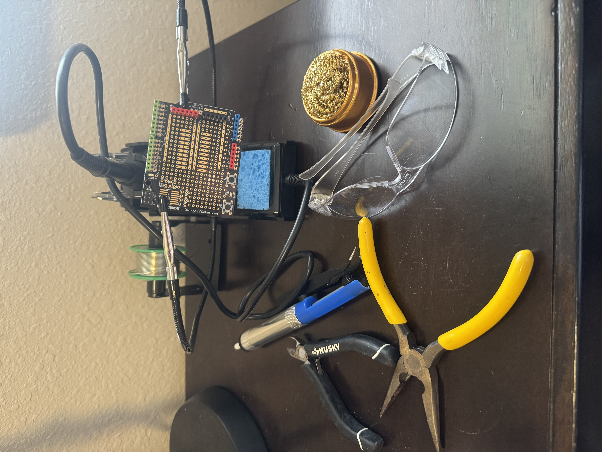
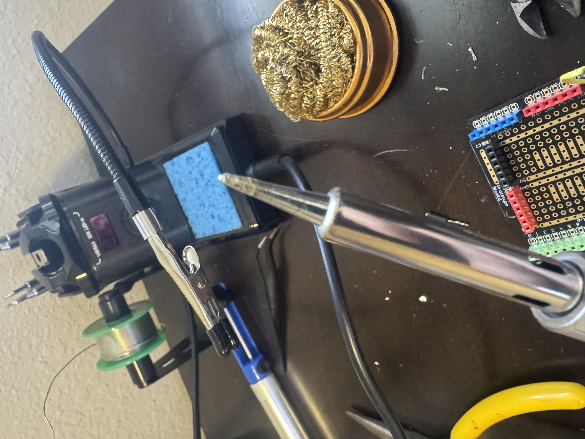
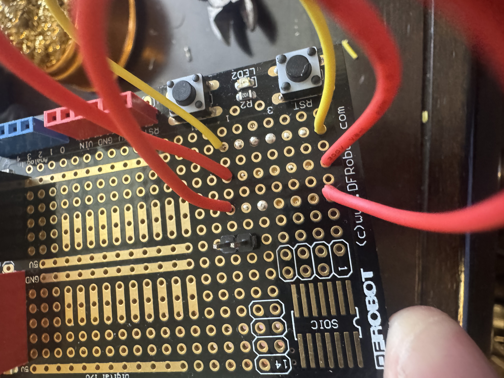
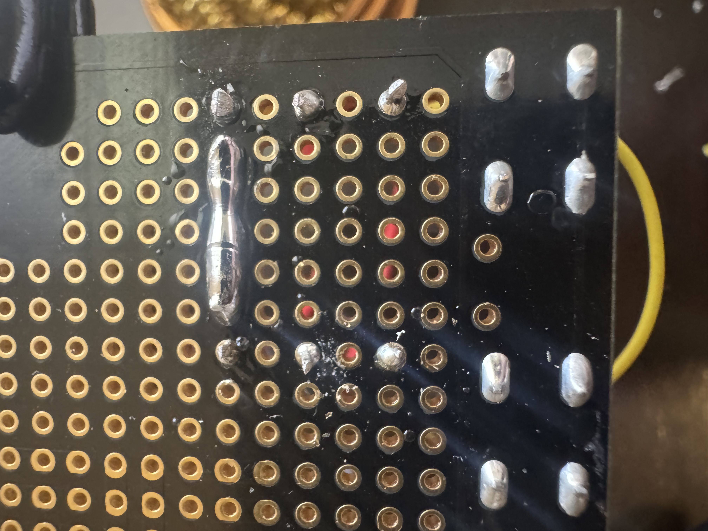
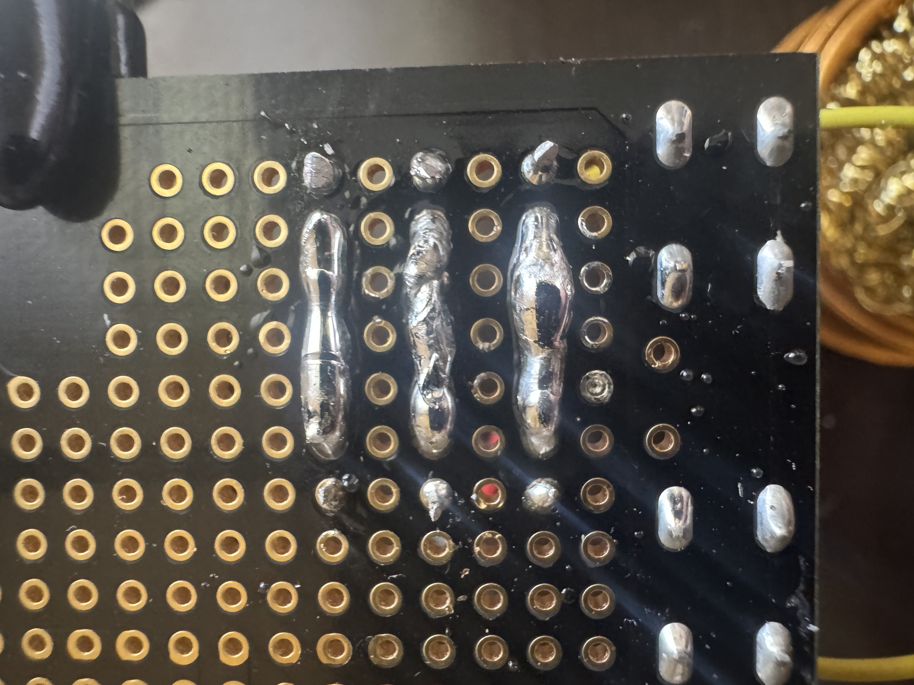
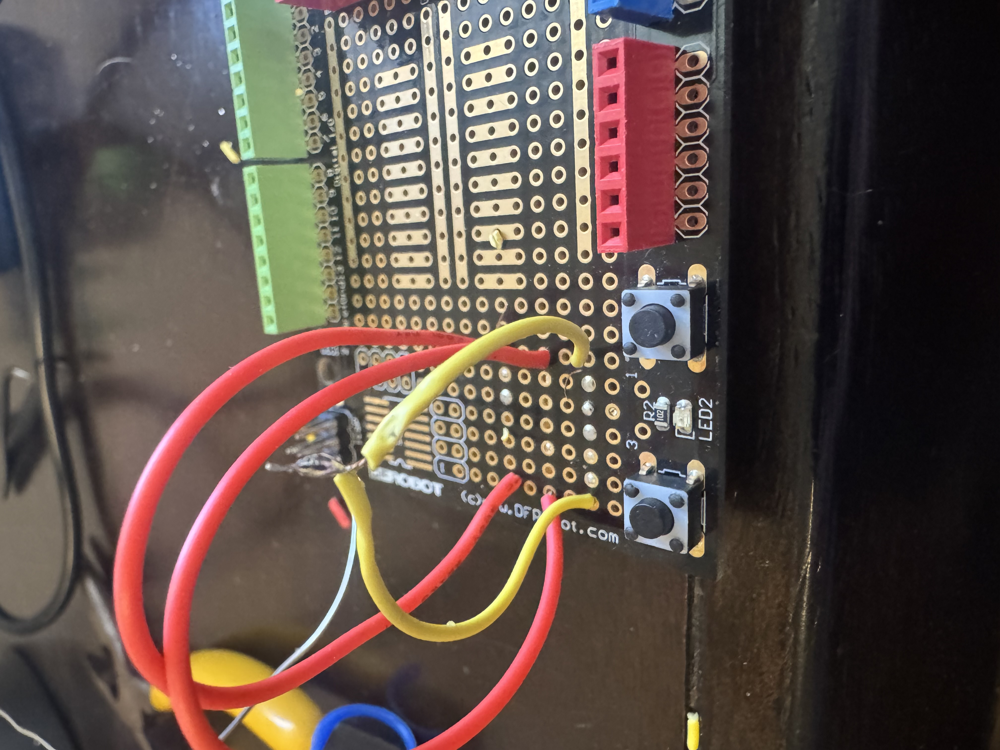
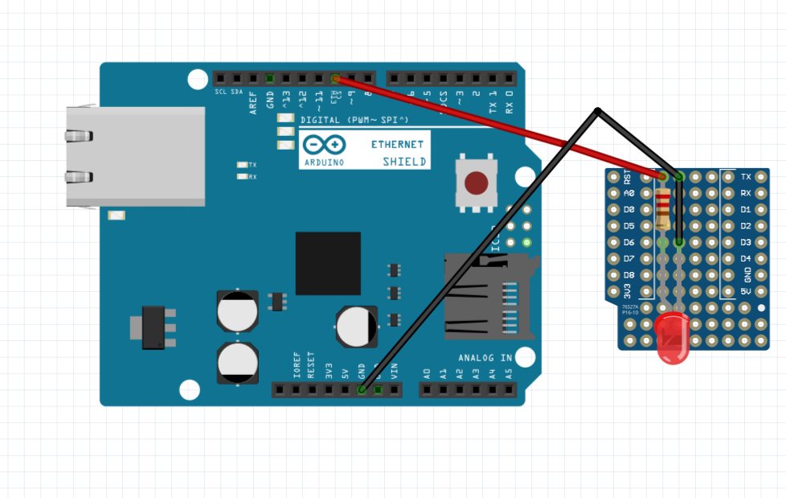
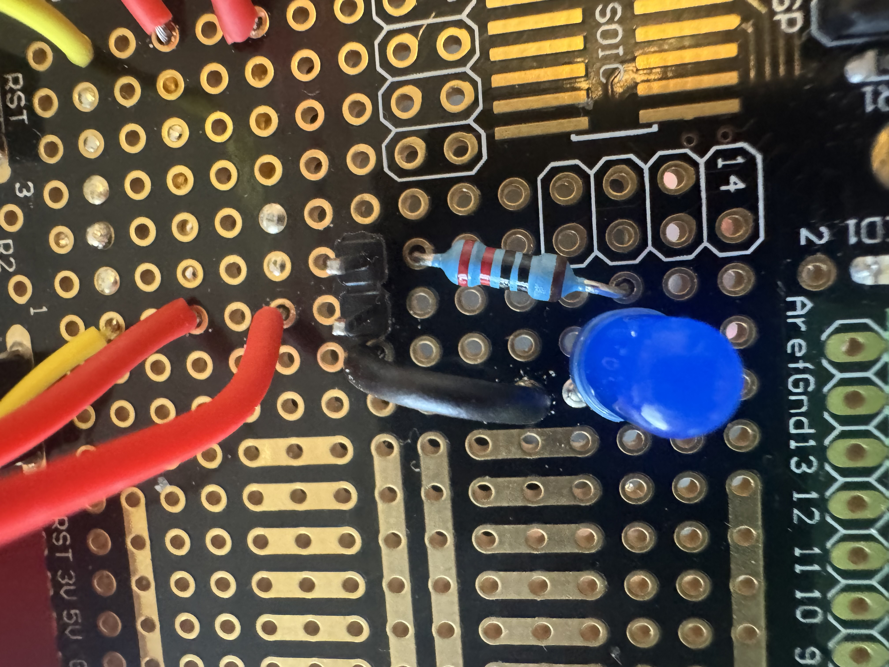
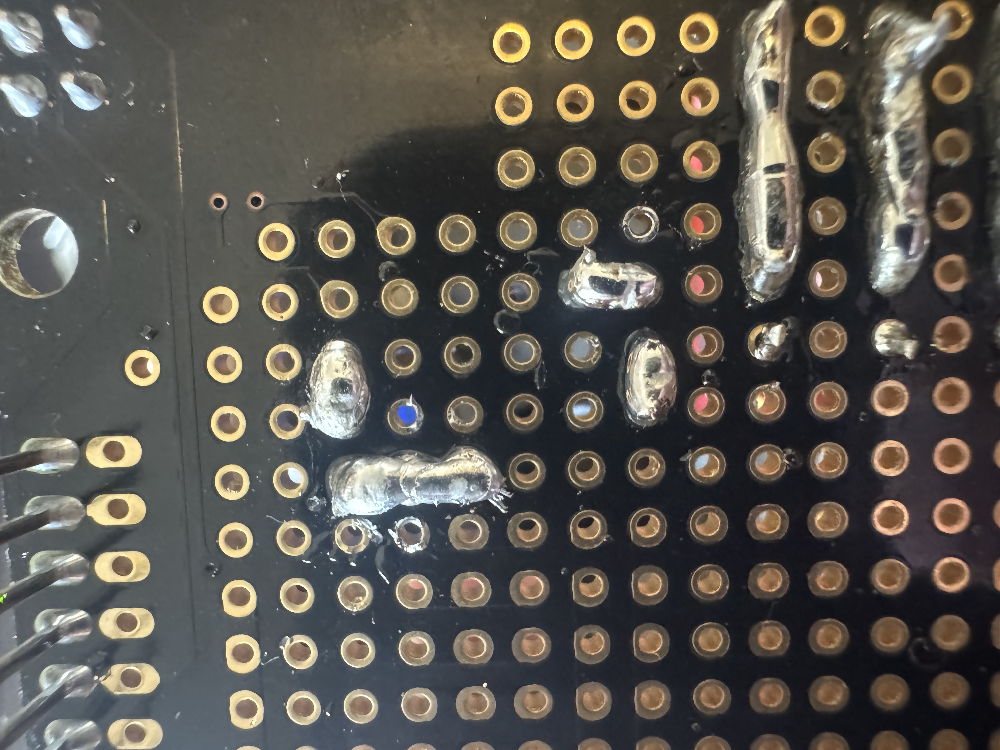

In this lab I practiced my basic soldering skills. Setting up a safe soldering station,
soldering wires to a protoboard, creating solder bridges, splicing wires, and building
a simple LED and resistor circuit on the protoboard that blinks from an Arduino digital pin.
Materials
Soldering iron and stand
Solder
Brass sponge and damp sponge
Helping hands
Safety glasses
Flush cutters, needle-nose pliers, scissors becasue I don't have a wire stripper
Protoboard
Solid core wire and stranded wire
LED
220 Ω resistor
Arduino
Part 1 — Setup
Safety steps I followed
Wore safety glasses while soldering and trimming leads.
Kept the hot iron in the stand when not soldering.
Worked in a ventilated area with a fan pointed at me and window open aswell as kept my face away from fumes.
Did not touch the metal parts of the iron, only the insulated handle.
Kept the work area clear of clutter and flammables, routed cords to avoid snagging.
Cleaned the iron tip often and re-tinned the tip as needed.
Washed hands after soldering.
'
Did not have food or drink near me or the soldering iron.

My soldering station setup iron, stand, brass sponge, tools, and safety glasses.

Cclean and tinned soldering iron tip before making joints.
Part 2 — Soldering Wires to Protoboard
Procedure
Stripped a short length of insulation from each wire end.
Inserted the wire into hole on the protoboard.
Heated the pad and wire together, then fed solder until it became a smooth joint.
Removed solder first, then the iron, and let the joint cool without movement.
Trimmed excess wire lead where needed.
Observation: Solid core wire was much easier to place and keep positioned in the holes.
Stranded wire was more flexible and tended to move unless twisted well. Solid core is definatly my preferred wire type for soldering

Top view showing the 6 wire connections soldered.

Underside view of solder joints for the wires.
Part 3 — Solder Bridges
Procedure
Placed solder on adjacent pads and allowed it to flow together into a bridge.
Built each bridge gradually to avoid spilling into nearby pads.
Checked visually that the intended pads were connected and no unintended pads were shorted.

Solder bridges connecting 5 pads together.
Part 4 — Splicing Wire
Procedure
Stripped wire end and twisted matching ends together.
Heated the twisted joint and flowed solder through the splice.

My spliced wire joint connecting two wires together.
Part 5 — LED and Resistor Circuit on Protoboard
Goal
Build an LED circuit on the protoboard and blink it from an Arduino digital pin.
I used Arduino digital pin 10 as the output pin.
Schematic

Schematic showing Arduino D10 to resistor to LED to GND.
Resistor Choice
I used a resistor of approximately 220 Ω. Assuming a 5 V Arduino output and a blue LED forward voltage of about 3.0 V:
I ≈ (5.0 V − 3.0 V) / 220 Ω ≈ 0.0091 A ≈ 9 mA

Top side of the finished LED and resistor circuit on the proto board.

Underside soldering for the finished LED and resistor circuit showing connections.
Video
The LED blinks on and off every 500 ms using digital pin 10.
Video showing the LED blinking from Arduino pin 10.
Keeping solder amounts small enough to avoid accidental bridging to nearby pads.
Getting the pad and the wire heated evenly so solder flowed smoothly and not pill up.
Holding wires steady while the joint cooled.
Conclusion
This lab helped me get comfortable with basic soldering technique. Clean and tinned tip,
correct heating order, and using minimal solder for clean joints.
I also practiced making bridges intentionally and spliceing wires.
I successfully built and ran a blinking LED circuit on the protoboard controlled by an Arduino.